MicroFace Library SRAM
라이브러리 영역의 공개 SRAM 수치.
07 · Technical guide
숫자는 빠르게 읽되, 서로 다른 범주의 지표를 섞지 않도록 지연시간·모델 규모·메모리를 분리해 정리합니다.
Latency

Memory footprint
라이브러리 영역의 공개 SRAM 수치.
데모 응용 영역으로 별도 제시된 SRAM 수치.
Demo + Library를 합친 flash 수치.
공식 표기의 범위와 측정 정의가 상세 공개되지 않았으므로, “라이브러리 <0.8 MB / 데모 0.34 MB”처럼 원문 구분을 유지하는 편이 안전합니다.
Model scale
| 항목 | 공개값 | 설명할 때의 의미 |
|---|---|---|
| Trainable parameters | 5,201,000 | 학습으로 결정되는 가중치 규모 |
| MACC | 6.02×10⁸ | 한 추론 흐름의 계산 복잡도 지표 |
| Face template | <148 bytes | 등록 사용자 한 명당 얼굴 특징 저장량 |
| Enrolled faces | 1,000 (adjustable) | 공개 성능 예시의 DB 규모; 제품 설정에 따라 조정 가능 |
| 1,000-user matching | 4.5 ms | 1:N 템플릿 비교의 공개 결과 |
이 case study 요약은 latency와 footprint를 공개하지만, 이 특정 구성의 FAR, FRR, ROC 또는 공격 유형별 PAD 정확도는 제공하지 않습니다. 속도만으로 인증 품질을 판단할 수 없습니다.